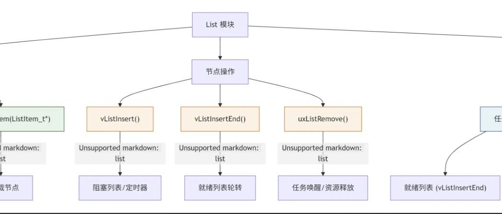

freerots之list实现
引言、
在 freertos中，链表（List） 是任务调度、资源同步和时间管理的核心基础设施。它通过高效的双向链表（List_t）实现了任务的优先级管理、阻塞唤醒、定时器触发等关键功能，确保系统在资源受限的嵌入式环境中仍能保持实时性和确定性。
从任务的就绪队列到阻塞列表，从队列的等待机制到定时器的触发逻辑，链表的操作贯穿整个 freertos内核。理解 freertos的链表机制，不仅能帮助我们深入掌握任务调度原理，还能优化任务管理、调试复杂问题，甚至定制自己的调度策略。
本文将详细解析 freertos的链表实现，包括初始化、插入、移除等核心操作，并揭示它们如何支撑 freertos的高效调度。
全文目录一、List 模块简介
1.1 任务模块中的链表应用
1.2 队列管理中的链表应用
二、List 核心函数详解
2.1 链表初始化函数
2.2链表项初始化函数
2.2 链表插入函数（两种）
2.3 链表移除函数
三、全文总结
3.1 关键设计思想
List是 FreeRTOS 的底层调度引擎，通过高效的双向链表实现任务管理、资源同步和时间控制，是实时操作系统的核心基础设施。用途：管理所有处于就绪状态（Ready）的任务，按优先级排序。
实现：每个优先级对应一个
List_t，pxReadyTasksLists[priority]存储该优先级下的任务列表。行为：
任务创建时，根据优先级插入对应链表。
调度器选择最高优先级链表的第一个任务运行。
阻塞任务列表（Blocked List）
用途：管理因等待事件（如延时、信号量、队列消息）而阻塞的任务。
实现：
xDelayedTaskList1和xDelayedTaskList2，按唤醒时间（xItemValue）排序。系统节拍中断（Tick Interrupt）会检查并唤醒到期任务。
挂起任务列表（Suspended List）
用途：管理被显式挂起的任务（
vTaskSuspend()）。实现：
xSuspendedTaskList，任务恢复时移回就绪列表。
之前重点讲过的任务状态链表项就是这些list的节点。
2.Queue管理中也会大量的用list。
(1) 队列（Queue）
用途：任务间或任务与中断间的数据传递（如消息、流数据）。
实现：
Queue_t内部使用 list_t管理：发送阻塞列表：
xTasksWaitingToSend（队列满时阻塞发送任务）。接收阻塞列表：
xTasksWaitingToReceive（队列空时阻塞接收任务）。
(2) 信号量（Semaphore）与互斥量（Mutex）
用途：资源访问控制、任务同步。
实现：基于队列，阻塞的任务按优先级或 FIFO 排序存储在
List_t中。
(3) 事件组（Event Group）
用途：多任务等待多个事件触发。
实现：阻塞的任务通过 l
ist_t管理，按事件位掩码唤醒。
之前重点讲过的任务事件链表项就是这些list的节点。
这些地方大量的用到list，方式是调用用户api从而实现list的功能，我将这些用户函数和他们的作用列表如下：
函数 | 作用 | 时间复杂度 | 典型应用场景 |
|---|---|---|---|
| 初始化空链表 | O(1) | 创建就绪列表、阻塞列表 |
| 初始化节点 | O(1) | 任务/定时器节点初始化 |
| 按值有序插入 | O(n) | 阻塞任务、定时器管理 |
| 插入链表末尾（不排序） | O(1) | 同优先级任务轮转调度 |
| 移除节点 | O(1) | 任务唤醒、资源释放 |
它们的关系：
初始化链表 → vListInitialise()↑初始化节点 → vListInitialiseItem()↓插入节点 → vListInsert()（按值排序） 或 vListInsertEnd()（尾部插入）↓移除节点 → uxListRemove()
二、list具体函数讲解
1.vListInitialise（）双向链表初始化
void vListInitialise( List_t * const pxList ){ /* The list structure contains a list item which is used to mark the * end of the list. To initialise the list the list end is inserted * as the only list entry. */ pxList->pxIndex = ( ListItem_t * ) &( pxList->xListEnd ); /*lint !e826 !e740 !e9087 The mini list structure is used as the list end to save RAM. This is checked and valid. */ /* The list end value is the highest possible value in the list to * ensure it remains at the end of the list. */ pxList->xListEnd.xItemValue = portMAX_DELAY; /* The list end next and previous pointers point to itself so we know * when the list is empty. */ pxList->xListEnd.pxNext = ( ListItem_t * ) &( pxList->xListEnd ); /*lint !e826 !e740 !e9087 The mini list structure is used as the list end to save RAM. This is checked and valid. */ pxList->xListEnd.pxPrevious = ( ListItem_t * ) &( pxList->xListEnd ); /*lint !e826 !e740 !e9087 The mini list structure is used as the list end to save RAM. This is checked and valid. */ pxList->uxNumberOfItems = ( UBaseType_t ) 0U; /* Write known values into the list if * configUSE_LIST_DATA_INTEGRITY_CHECK_BYTES is set to 1. */ listSET_LIST_INTEGRITY_CHECK_1_VALUE( pxList ); listSET_LIST_INTEGRITY_CHECK_2_VALUE( pxList );}
void vListInitialise( List_t * const pxList ){/* The list structure contains a list item which is used to mark the* end of the list. To initialise the list the list end is inserted* as the only list entry. */pxList->pxIndex = ( ListItem_t * ) &( pxList->xListEnd ); /*lint !e826 !e740 !e9087 The mini list structure is used as the list end to save RAM. This is checked and valid. *//* The list end value is the highest possible value in the list to* ensure it remains at the end of the list. */pxList->xListEnd.xItemValue = portMAX_DELAY;/* The list end next and previous pointers point to itself so we know* when the list is empty. */pxList->xListEnd.pxNext = ( ListItem_t * ) &( pxList->xListEnd ); /*lint !e826 !e740 !e9087 The mini list structure is used as the list end to save RAM. This is checked and valid. */pxList->xListEnd.pxPrevious = ( ListItem_t * ) &( pxList->xListEnd ); /*lint !e826 !e740 !e9087 The mini list structure is used as the list end to save RAM. This is checked and valid. */pxList->uxNumberOfItems = ( UBaseType_t ) 0U;/* Write known values into the list if* configUSE_LIST_DATA_INTEGRITY_CHECK_BYTES is set to 1. */listSET_LIST_INTEGRITY_CHECK_1_VALUE( pxList );listSET_LIST_INTEGRITY_CHECK_2_VALUE( pxList );}
vListInitialise用于初始化一个双向链表（List），将其设置为空链表状态。这是所有链表操作的基础，确保链表结构合法且可安全使用。pxIndex = ( ListItem_t * ) &( pxList->xListEnd );xListEnd.xItemValue = portMAX_DELAY;
pxIndex指向链表的尾节点 xListEnd，并将尾节点的 xItemValue设为最大值（portMAX_DELAY）。
设置尾节点的前后指针，使它们指向自己。
xListEnd.pxNext = ( ListItem_t * ) &( pxList->xListEnd );xListEnd.pxPrevious = ( ListItem_t * ) &( pxList->xListEnd );
这样初始化就完成了。
2.链表项初始化vListInitialiseItemvoid vListInitialiseItem( ListItem_t * const pxItem ){/* Make sure the list item is not recorded as being on a list. */pxItem->pxContainer = NULL;/* Write known values into the list item if* configUSE_LIST_DATA_INTEGRITY_CHECK_BYTES is set to 1. */listSET_FIRST_LIST_ITEM_INTEGRITY_CHECK_VALUE( pxItem );listSET_SECOND_LIST_ITEM_INTEGRITY_CHECK_VALUE( pxItem );}
简单的初始化一个链表节点（ListItem_t），确保其处于未挂载状态，并可选地设置完整性校验值，为后续插入链表做好准备。
初始化后的节点状态
字段 | 值 | 说明 |
|---|---|---|
|
| 表示节点未挂载到任何链表 |
完整性校验字段（可选） | 魔数值 | 用于内存合法性校验 |
3.链表尾部插入函数vListInsertEnd（）
void vListInsertEnd( List_t * const pxList,ListItem_t * const pxNewListItem ){ListItem_t * const pxIndex = pxList->pxIndex;/* Only effective when configASSERT() is also defined, these tests may catch* the list data structures being overwritten in memory. They will not catch* data errors caused by incorrect configuration or use of FreeRTOS. */listTEST_LIST_INTEGRITY( pxList );listTEST_LIST_ITEM_INTEGRITY( pxNewListItem );/* Insert a new list item into pxList, but rather than sort the list,* makes the new list item the last item to be removed by a call to* listGET_OWNER_OF_NEXT_ENTRY(). */pxNewListItem->pxNext = pxIndex;pxNewListItem->pxPrevious = pxIndex->pxPrevious;/* Only used during decision coverage testing. */mtCOVERAGE_TEST_DELAY();pxIndex->pxPrevious->pxNext = pxNewListItem;pxIndex->pxPrevious = pxNewListItem;/* Remember which list the item is in. */pxNewListItem->pxContainer = pxList;( pxList->uxNumberOfItems )++;}
将一个新节点（pxNewListItem）插入到链表的“尾部”，但不按值排序，而是维护环形结构，确保该节点成为最后被遍历到的项。这是 FreeRTOS 实现同优先级任务轮转调度的关键操作。
先获取链表索引指针，并检查节点内存完整性
ListItem_t * const pxIndex = pxList->pxIndex;// 获取当前链表索引指针listTEST_LIST_INTEGRITY( pxList );// 检查链表内存完整性（若启用调试）listTEST_LIST_ITEM_INTEGRITY( pxNewListItem );// 检查节点内存完整性
新节点插入到 pxIndex之前的位置，而非绝对的物理末尾。
pxNewListItem->pxNext = pxIndex;// 新节点的next指向队列索引头节点pxNewListItem->pxPrevious = pxIndex->pxPrevious;// 新节点的prev指向原索引头的前驱pxIndex->pxPrevious->pxNext = pxNewListItem;// 原前驱节点的next指向新节点pxIndex->pxPrevious = pxNewListItem;// 当前索引的prev指向新节点
4.vListInsert()升序插入
void vListInsert( List_t * const pxList,ListItem_t * const pxNewListItem ){ListItem_t * pxIterator;const TickType_t xValueOfInsertion = pxNewListItem->xItemValue;/* Only effective when configASSERT() is also defined, these tests may catch* the list data structures being overwritten in memory. They will not catch* data errors caused by incorrect configuration or use of FreeRTOS. */listTEST_LIST_INTEGRITY( pxList );listTEST_LIST_ITEM_INTEGRITY( pxNewListItem );if( xValueOfInsertion == portMAX_DELAY ){pxIterator = pxList->xListEnd.pxPrevious;}else{for( pxIterator = ( ListItem_t * ) &( pxList->xListEnd ); pxIterator->pxNext->xItemValue <= xValueOfInsertion; pxIterator = pxIterator->pxNext ) /*lint !e826 !e740 !e9087 The mini list structure is used as the list end to save RAM. This is checked and valid. *//*lint !e440 The iterator moves to a different value, not xValueOfInsertion. */{/* There is nothing to do here, just iterating to the wanted* insertion position. */}}pxNewListItem->pxNext = pxIterator->pxNext;pxNewListItem->pxNext->pxPrevious = pxNewListItem;pxNewListItem->pxPrevious = pxIterator;pxIterator->pxNext = pxNewListItem;/* Remember which list the item is in. This allows fast removal of the* item later. */pxNewListItem->pxContainer = pxList;( pxList->uxNumberOfItems )++;}/*------------
pxNewListItem）按 xItemValue升序插入链表，确保链表始终保持有序。这是 FreeRTOS 实现时间管理（如任务阻塞、定时器）和优先级调度的关键操作。portMAX_DELAY特殊情况if( xValueOfInsertion == portMAX_DELAY ) {pxIterator = pxList->xListEnd.pxPrevious; // 直接插入到尾节点前}
portMAX_DELAY是尾节点 xListEnd的值，若新节点值与之相同，直接插入到尾节点前可避免遍历死循环。（2）常规情况：遍历寻找插入位置
for( pxIterator = ( ListItem_t * ) &( pxList->xListEnd );pxIterator->pxNext->xItemValue <= xValueOfInsertion;pxIterator = pxIterator->pxNext ){/* 空循环，仅移动迭代器 */}
从尾节点 xListEnd开始（通过强制类型转换 (ListItem_t *)&xListEnd）。
向后查找第一个满足 pxNext->xItemValue > xValueOfInsertion的位置。
若链表为 [10] → [20] → [xListEnd]，插入值为 15的节点：
第一轮：pxIterator指向 xListEnd，比较 10 <= 15→ 继续。
第二轮：pxIterator指向 [10]，比较 20 <= 15→ 停止，插入到 [10]和 [20]之间。
（3）找到位置后插入节点
pxNext = pxIterator->pxNext;pxPrevious = pxIterator;pxNext->pxPrevious = pxNewListItem;pxNext = pxNewListItem;
调整顺序
新节点的
next指向原后继节点。新节点的
prev指向当前迭代节点。原后继节点的
prev指向新节点。当前迭代节点的
next指向新节点。
5.uxListRemove节点移除
UBaseType_t uxListRemove( ListItem_t * const pxItemToRemove ){/* The list item knows which list it is in. Obtain the list from the list* item. */List_t * const pxList = pxItemToRemove->pxContainer;pxItemToRemove->pxNext->pxPrevious = pxItemToRemove->pxPrevious;pxItemToRemove->pxPrevious->pxNext = pxItemToRemove->pxNext;/* Only used during decision coverage testing. */mtCOVERAGE_TEST_DELAY();/* Make sure the index is left pointing to a valid item. */if( pxList->pxIndex == pxItemToRemove ){pxList->pxIndex = pxItemToRemove->pxPrevious;}else{mtCOVERAGE_TEST_MARKER();}pxItemToRemove->pxContainer = NULL;( pxList->uxNumberOfItems )--;return pxList->uxNumberOfItems;}/*-------
从链表中安全移除指定节点，维护链表完整性，并返回操作后的剩余节点数量。这是任务唤醒、资源释放等操作的关键底层支持
节点移除不是删除，核心操作是移出链表并且改变节点状态为未挂载。
(1) 获取节点所属链表
List_t * const pxList = pxItemToRemove->pxContainer;pxContainer作用：每个节点通过此字段记录所属链表，实现快速定位。若 pxContainer == NULL，说明节点未挂载到任何链表（调试时可触发断言）。
(2) 调整相邻节点指针
pxNext->pxPrevious = pxItemToRemove->pxPrevious;pxPrevious->pxNext = pxItemToRemove->pxNext;
环形链表维护：即使移除首节点或尾节点，链表仍保持闭环。
(3) 处理遍历指针 pxIndex
if( pxList->pxIndex == pxItemToRemove ) {pxList->pxIndex = pxItemToRemove->pxPrevious;// 回退到前驱节点}
pxIndex是链表的当前遍历指针，若它指向被移除的节点，必须重置为有效节点（否则后续遍历会访问非法内存）。
回退策略：选择前驱节点而非后继节点，避免跳过未遍历的节点。
(4) 重置节点状态
pxItemToRemove->pxContainer =NULL// 标记节点为未挂载状态( pxList->uxNumberOfItems )--;// 更新节点计数器
pxContainer = NULL：允许该节点后续被重新插入其他链表。
以上就是list模块的全部控制函数的具体实现
三.全文总结
FreeRTOS 的链表模块是其实时任务调度的底层引擎，其设计体现了嵌入式系统的高效性和可靠性。通过分析 vListInitialise、vListInsert、vListInsertEnd和 uxListRemove等核心函数，我们可以总结出链表在 FreeRTOS 中的关键作用：
任务调度
就绪列表（
pxReadyTasksLists）按优先级组织任务，确保高优先级任务优先执行。阻塞列表（
xDelayedTaskList）按时间排序，Tick 中断快速唤醒到期任务。挂起列表（
xSuspendedTaskList）管理暂停的任务，恢复时重新调度。同步与通信
队列、信号量、事件组 使用链表管理阻塞任务，实现 FIFO 或优先级唤醒策略。
链表不仅是 FreeRTOS 的数据结构，更是其实时调度能力的核心保障。 理解它的实现，能让我们更高效地开发稳定、高性能的嵌入式应用，并在遇到调度问题时快速定位根因。